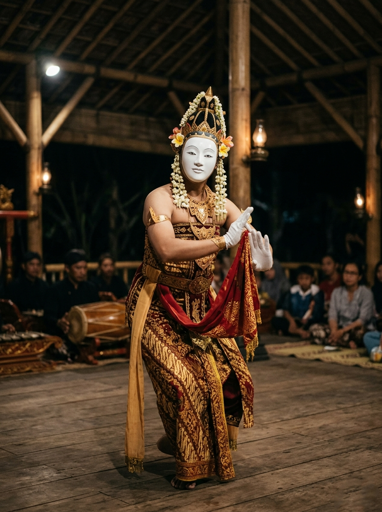
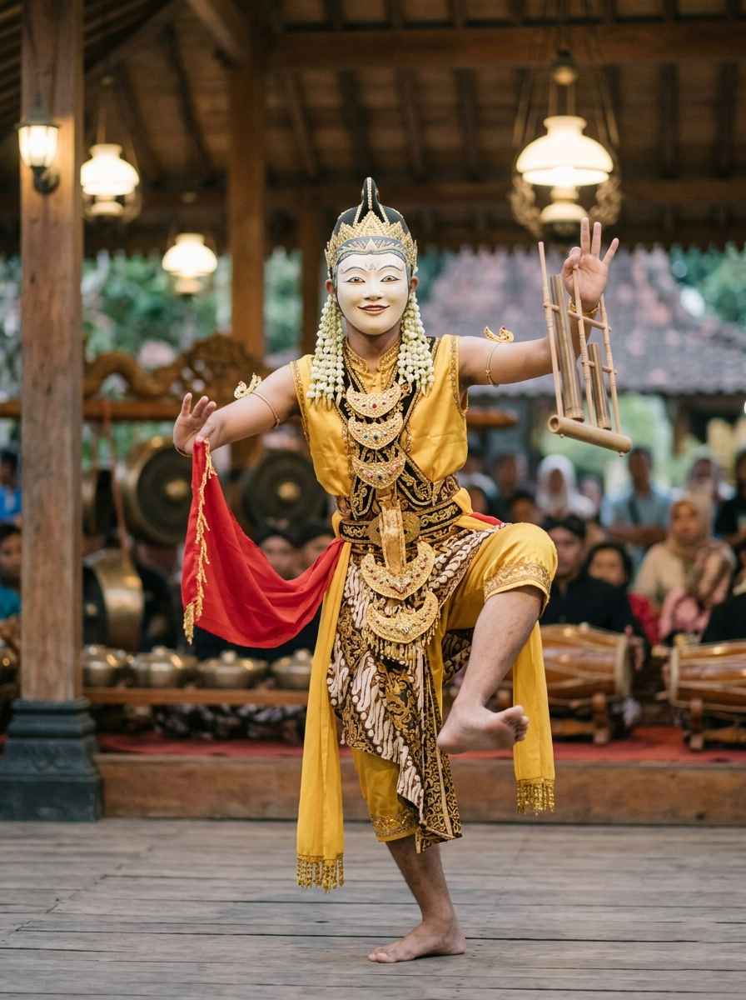
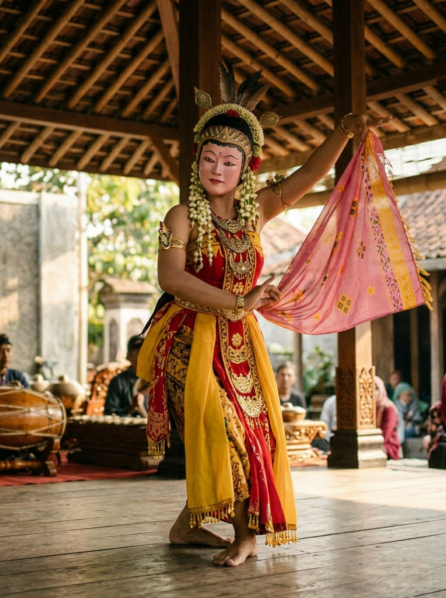
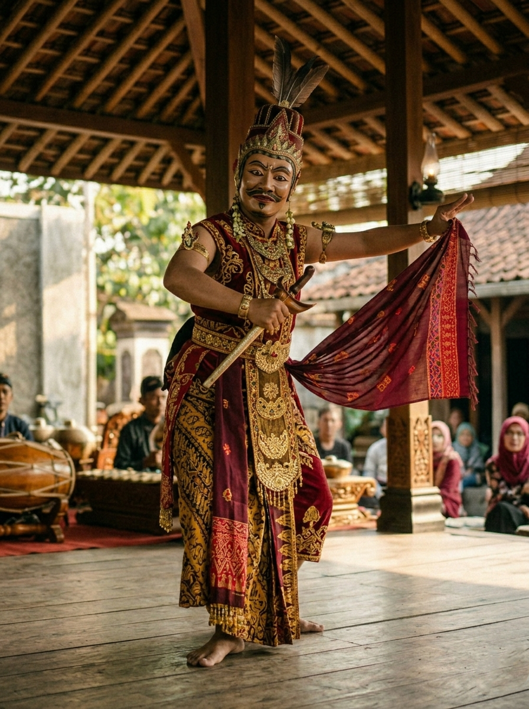

1. Panji
Wajah putih suci, melambangkan kesucian bayi yang baru lahir, tenang, dan tanpa noda.

2. Samba
Wajah ceria, melambangkan kelincahan masa anak-anak dan remaja yang penuh tawa.

3. Rumyang
Wajah merah jambu, melambangkan pencarian jati diri manusia di fase dewasa awal.

4. Tumenggung
Wajah berwibawa, melambangkan sosok pemimpin yang tegas, mapan, dan bijaksana.
Makna Di Balik Setiap Gerak
Philosophical Move
Klik pada panel di bawah untuk membuka rahasia filosofi gerak tari topeng Cirebon.
Sembahan (Gerak Menghormat)
Gerakan merapatkan kedua telapak tangan di depan dada atau wajah melambangkan kerendahan hati manusia sebelum menghadap Sang Pencipta (Welas Asih). Gerakan ini juga merupakan simbol salam penghormatan yang tulus kepada alam semesta dan sesama makhluk hidup.
Adreg & Gedut (Keteguhan Langkah)
Gerakan menghentakkan kaki yang mantap ke tanah beriringan dengan keseimbangan lutut melambangkan keteguhan iman dan jiwa manusia dalam berpijak di bumi. Gerak ini mengajarkan agar kita tidak mudah goyah di dalam menghadapi terpaan ujian dan godaan hidup.
Nandak & Jangkung (Kebesaran Ruh)
Gerak meregangkan tangan lebar-lebar dengan tempo dinamis melambangkan kedamaian batin dan keterbukaan jiwa untuk menerima kebenaran. Gerakan ini menyiratkan pesan kebebasan spiritual yang tetap berada di dalam koridor hukum moral kemanusiaan.